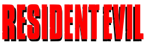

Articulo sobre videojuegos
Counter Strike: Global Offensive
Counter-Strike: Global Offensive (CS:GO) es un videojuego de disparos en primera persona desarrollado por Valve Corporation y Hidden Path Entertainment. Es el cuarto juego de la saga Counter-Strike. Fue lanzado al mercado en agosto de 2012 para las plataformas de Microsoft Windows, macOS y Xbox 360 y PlayStation 3. La versión para Linux estuvo disponible al público en septiembre de 2014. El juego consiste en dos equipos, los Terroristas y los Antiterroristas (T y CT, respectivamente), los cuales se enfrentan entre ellos en diferentes modos de juego. El modo más común es en el cual el bando Terrorista tienen que plantar y defender una bomba mientras los Antiterroristas defender las zonas de plante de la bomba y su posterior desactivación. Hay 9 modos de juego oficiales, cada uno con sus características específicas. El juego también tiene un sistema de emparejamiento, que permite a los jugadores demostrar su nivel en servidores dedicados de la propia desarrolladora, además de servidores creados por la comunidad. A finales de 2018, CS:GO se unió a la moda de los Battle-Royale sacando su propio modo de juego, "Danger-Zone".
Minecraft
Minecraft es un videojuego de construcción de tipo «mundo abierto» o sandbox creado originalmente por el sueco Markus Persson (conocido comúnmente como «Notch»),19 y posteriormente desarrollado por Mojang Studios (actualmente parte de Microsoft).20 Fue lanzado el 17 de mayo de 2009, y después de numerosos cambios, su primera versión estable «1.0» fue publicada el 18 de noviembre de 2011.
Resident Evil
Resident Evil —cuyo título original en Japón es Biohazard (バイオハザード Baiohazādo?, «Peligro biológico»)— es un videojuego de terror del subgénero horror de supervivencia desarrollado y publicado por Capcom, originalmente para PlayStation en 1996, y es el primer juego de la serie Resident Evil. La trama del juego sigue a Chris Redfield y Jill Valentine, miembros de una fuerza de élite conocida como S.T.A.R.S., mientras investigan las afueras de Raccoon City tras la desaparición de los miembros de su equipo. Pronto quedan atrapados en una mansión infestada de zombis y diferentes tipos de monstruos. Dentro del juego, "El jugador", después de haber elegido jugar como Chris o Jill, debe explorar la mansión para descubrir sus secretos.